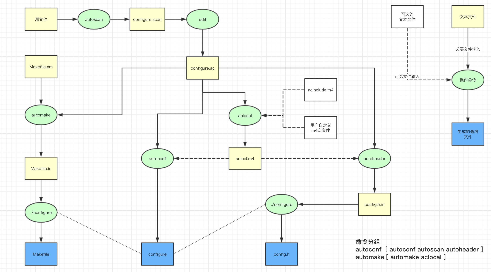

unix上c项目构建过程简析
对于linux上大多数软件包的编译过程都是 configure make make install 三个步骤来完成，具体分析下这些过程。其中configure 是一个shell脚本，用来生成文件 Makefile，这个文件是下一步make 过程需要用到的配置文件，用来生成源代码文件中的依赖关系，通过文件的修改时间来决定哪些文件有变动需要调用gcc 重新编译到目标文件并最终链接成二进制文件。make install 的过程主要是将编译完成的文件拷贝到指定的文件夹(或者安装目录)，这个安装路径是通过 configure --prefix=[path] 来定义的 默认一般为 /usr/local/bin 。
configure 这个shell文件是要通过源代码机遇一系列工具来生成的，作用是用来检查源代码所在的系统是否用户源代码所依赖的库文件 、头文件、二进制文件 等。
其生成过程如下图

对这个过程进行分析，我们最终需要获得的文件如下 configure Makefile config.h , 生成这些文件需要的输入文件 configure.ac Makefile.am aclocal.m4,这些文件都有对应的语法方式，需要进行逐个分析。
工具
这里用到的工具有
| 命令 | 所属命令组 | 作用 |
|---|---|---|
| autoscan | autoconf | 扫描文件源代码 生成 conifigure.ac 模版 |
| autoheader | autoconf | 生成头文件 |
| autoconf | autoconf | 生成 configure 脚本 |
| aclocal | automake | 生成m4宏 文件 |
| automake | automake | 生成Makefile.in 文件 为下一步生成Makefile 做准备 |
autoscan 会通过分析源代码生成一个 configure.ac 的模版文件 configure.scan，需要基于 configure.scan 的内容进行编辑cp configure.scan configure.ac (这里文件后缀有两种 configure.ac configure.in 这个主要看autoconf工具 默认读取文件的后缀了，目前大部分使用 .ac 作为文件后缀)。
1. configure.ac
基于空文件生成的configure.scan文件默认模版如下
1 | shell> autoscan ./ |
这里面使用的主要是一些类似c语言中的宏，事实上跟宏的原理一样，是被用来替换的，c语言中宏被替换成c代码，这里的宏会被替换成shell脚本代码，我们最后生成的是shell脚本
这些宏是由 autoconf 工具内部定义的
所以这个文件中宏之外的内容都是 shell 脚本代码了
1.1 基本宏
AC_PREREQ([VERSION]) 检查autoconf 软件版本是否大于指定版本
1 | AC_PREREQ([2.69]) |
AC_INIT([FULL-PACKAGE-NAME], [VERSION], [BUG-REPORT-ADDRESS]) 定义软件包
FULL-PACKAGE-NAME 代码包的完整名称
VERSION 代码包的版本
BUG-REPORT-ADDRESS 代码bug反馈地址 通常为邮箱
1 | AC_INIT([php-src], [7.4.1], [bug@php.net]) |
AC_MSG_WARN([WRN_MSG]) 显示一个warning 提醒 脚本不会中断执行
1 | AC_MSG_WARN("cannot found lib xxx") |
AC_MSG_ERROR([ERR_MSG], [ExitCode]) 显示一个错误 且 会中断脚本的执行
1 | AC_MSG_ERROR([library xxx is need], [500]) |
1.2 依赖检查
1.2.1 对二进制文件的检查
使用 autoconf 内置的宏
AC_PROG_CC 检查c编译器AC_PROG_GREP 检查grep工具AC_PROG_LEX 检查文件处理工具 lex
自定义查找
AC_CHECK_PROG(variable, prog-to-check-for, value-if-found, [value-if-not-found], [path = '$PATH'], [reject])
| 参数 | 作用 |
|---|---|
| variable | 变量名称，autoconf 会将当前命令的结果赋值给这个shell变量 |
| prog-to-check-for | 软件执行文件名称 |
| value-if-found | 查找到返回的值 这个值会赋值给 变量 variable |
| value-if-not-found | 查找不到返回的值 这个值会赋值给 变量 variable |
| path | 定义查找路径 否则 会通过环境变量 $PATH 查找 |
1.2.2 查找文件
检查头文件
检查一个头文件AC_CHECK_HEADER (header-file, [action-if-found], [action-if-not-found], [includes])
检查多个头文件AC_CHECK_HEADERS (header-file . . ., [action-if-found], [action-if-not-found], [includes])
| 参数 | 作用 | 默认值 |
|---|---|---|
| header-file | 要查找的头文件 | required |
| action-if-found | 如果找到 执行此命令 | AC_DEFINE(HAVE_HEADER_FILE_H, 1,[Define to 1 if you have <header-file.h>.]) # 定义头文件 define HAVE_HEADER_FILE_H 1 |
| action-if-not-found | 如果没找到执行此命令 | AC_MSG_ERROR([sorry, can’t do anything for you]) # 显示错误 |
| includes | 查找路径 |
1 | AC_CHECK_HEADERS (stdio.h) |
1.3 配置定义
定义头文件的输出AC_CONFIG_HEADERS (header . . ., [cmds], [init-cmds])
定义宏 并 最终输出到 定义的头文件中
1 | AC_DEFINE (variable, value, [description]) |
1 | AC_SUBST() ... |
宏命令很多 需要的时候还是去看手册吧 比较清晰 虽然是英文的(看文章最后的参考链接)
2. aclocal.m4
m4 宏 相对简单，m4主要就是做宏的替换 最终输出文本acinclude.m4 UserDefineMicro.m4 configure.ac ----- m4 ----> aclocal.m4
其中的 用户自定义宏 和 acinclude.m4 是可选择的
宏定义
1
2
3define(FOO, Bar)dnl
this is a define word FOO以上会输出
this is a define word Bar，主功能就是一个替换 其中的dnl是取消一个空行，默认情况下m4会在每行之间插入一个空行函数
m4 也提供一些函数用来处理字符串 如substr($str, $from, $to)切割字符串len($str)计算字符串长度 等…
详细的m4宏的编辑可以参考 GUN 的手册
3. Makefile.am
Makefile.am 是用来生成最终的 Makefile 文件，他是更高层次的抽象，最终的Makefile 格式会在接下来介绍。 Makefile.am 主要用来配置哪些源代码需要编译成什么目标文件 以及 要安装到哪些目录
指定文件的编译类型
| 命令 | 作用 | |
|---|---|---|
| PROGRAMS | 可执行程序 | |
| SOURCES | 源代码 | |
| HEADERS | 头文件 | |
| LIBRARIES | 库文件 | |
| LTLIBRARIES | libtool 库文件 | |
| DATA | 不可执行的数据文件 | |
| SCRIPTS | 脚本文件 |
4. make 命令以及 Makefile文件
Makefile 规则格式 变量 伪目标 包含其他Makefile文件
make 命令 是以文件为输入参数的，可以通过 -f 或 --file 指定文件 ，默认情况在不指定时 make 会在当前文件夹下依次寻找名为 GNUmakefile makefile Makefile 的文件，约定俗成的 以 Makefile 作为文件名。一般情况 make 会将我们的命令作为文本输出 如果不想输出命令文本可以使用 -s 参数
文件语法规则
1 | target: [prerequisites .. .. ..] |
其中target 叫做目标 prerequisites 是一个依赖列表 这些在一般情况下都是文件， 紧接着的一行是shell命令 且要以tab开始才能生效, make 在执行的过程中 先匹配 target 匹配到后检查后面的依赖 如果依赖文件的修改时间晚于 target 文件 则会将这个依赖文件作为 目标 去匹配 所有的都匹配完毕则执行下面的 shell 命令
如下一个简单的使用
默认情况下 在执行 make 的时候不指定 目标 make 从第一个定义的 目标开始执行
1 | main.c: foo.o bar.o |
依赖列表可以为空，我们先不考虑依赖列表 把问题简单化 来理解目标的作用。目标在一般情况下是文件，make 会在源代码目录中查询这个文件 如果文件找不到则会将他当作一个伪目标 继续执行，伪目标也可以声明 让make 免去查询步骤, 声明如下
1 | .PHONY: foo bar |
执行 make -s 输出 foo
执行 make -s bar 输出 foo
执行 make -s foo 输出 foo
增加依赖列表进来 理解make 的递归操作 为了便于理解 这里仅使用伪目标
1 | .PHNOY: foo bar baz |
执行make 先执行第一个目标 foo 然后 foo 依赖 bar 则递归的先去匹配执行 目标 bar ，目标 bar 匹配到 但是他又 依赖 baz 则继续递归执行到 baz , 目标 baz 没有依赖 则 执行他的shell 命令 执行完毕 回到 bar ，bar 下面的 biz 目标处理完毕 后面没有 依赖目标 则 执行 bar 的shell 然后回退到 foo
所以最终的输出是
1 | baz |
注意 这里面每个目标都只会执行一次
如果文件比较多 文件名列表写起来太繁琐 make 提供变量的机制的，如下
1 | .PHNOY: foo bar baz |
可以通过变量的形式简化 将依赖列表 赋值给一个变量 使用的时候 以${var} 的形式使用 如下
1 | .PHNOY: foo bar baz |
make 还支持 include 关键字 引入其他的 Makefile 文件
如果是文件的话 目标与依赖的比较是根据文件的修改时间 如果目 依赖文件的修改时间晚于标的修改时间 也就是说 依赖的文件更新 则会执行下面的shell命令
目标文件不存在也会直接执行下面的shell命令